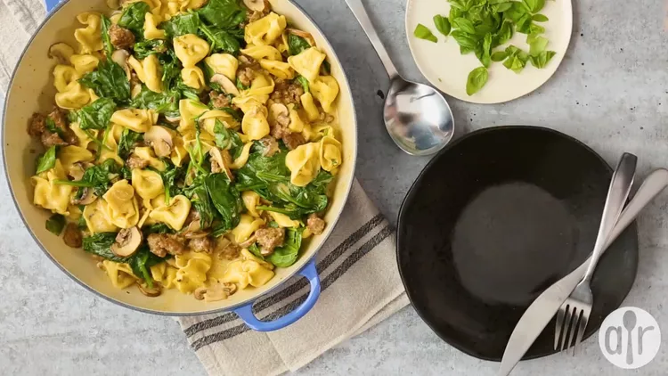

Italian Sausage Tortellini
Home

Italian Sausage Tortellini
Tons of flavor in this tortellini with Italian sausage! Your family will love this!
Ingrediant List:
- 2 tablespoons unsalted butter
- 1 (8 ounce) package baby portobello mushrooms, sliced
- 1 cup dry white wine (such as Pinot Grigio), divided
- 3 cloves garlic, minced, divided
- 10 ounces mild Italian sausage, casings removed
- 1 (16 ounce) package three-cheese tortellini
- 14 ½ ounces Alfredo basil sauce
- 1 (5 ounce) package baby spinach leaves
Side Note -> The Following steps didn't had any pictures
How to make it:
-
Step 1:
Heat butter in a large, deep skillet over medium heat. Cook and stir mushrooms, 1/2 cup white wine, and 1 clove minced garlic until liquid has reduced and mushrooms have softened, about 5 minutes. Remove from heat and place in a bowl.
-
Step 2:
Heat the same skillet over medium-high heat. Cook and stir Italian sausage in the hot skillet until browned and crumbly, 5 to 7 minutes, dividing it into bite-sized portions while stirring. Remove excess grease by placing paper towels onto a plate and dumping browned sausage onto it to drain. Return sausage to the skillet.
-
Step 3:
Return cooked mushrooms back to the skillet with sausage and add tortellini, Alfredo basil sauce, remaining 1/2 cup white wine, and remaining garlic. Reduce heat to medium-low. Cover and cook, stirring occasionally, for about 10 minutes. Add spinach; cover and cook until spinach is wilted, 3 to 4 minutes more. Mix well to combine. Remove from heat and serve.